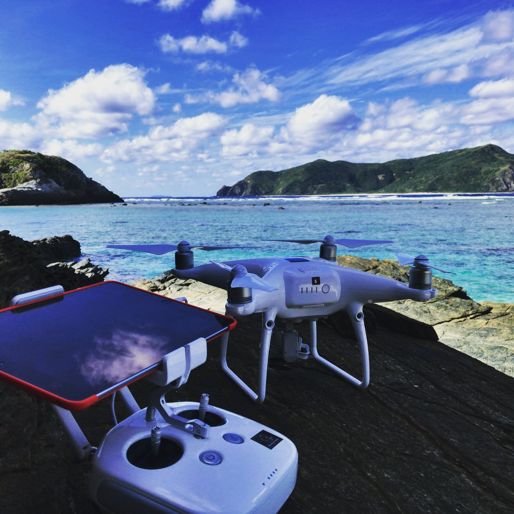
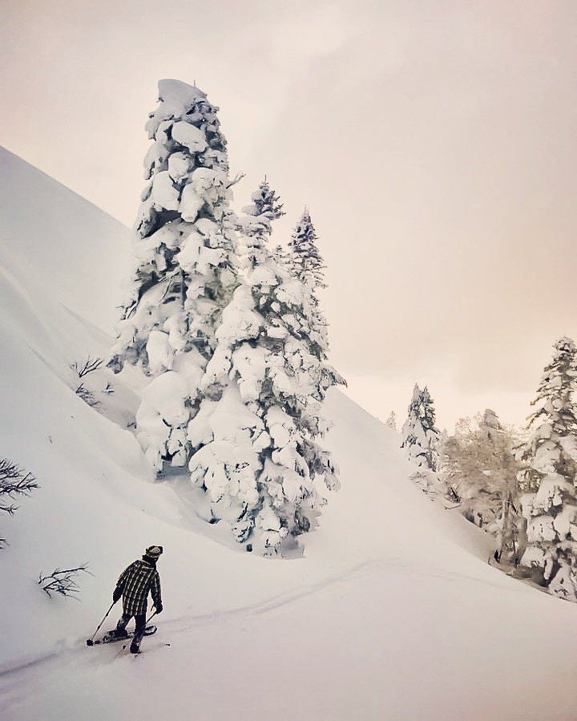
2017
環境省
「国立公園満喫プロジェクト」
DRONE CINEMATOGRAPHY
慶良間諸島、霧島錦江湾、阿蘇くじゅう、大山隠岐、伊勢志摩、日光、十和田八幡平の7国立公園でドローン撮影。
官公庁、博物館、自治体、企業等の映像制作・撮影実績。
Direction / Cinematography / Drone / Editing / VR・360° / Music。


慶良間諸島、霧島錦江湾、阿蘇くじゅう、大山隠岐、伊勢志摩、日光、十和田八幡平の7国立公園でドローン撮影。
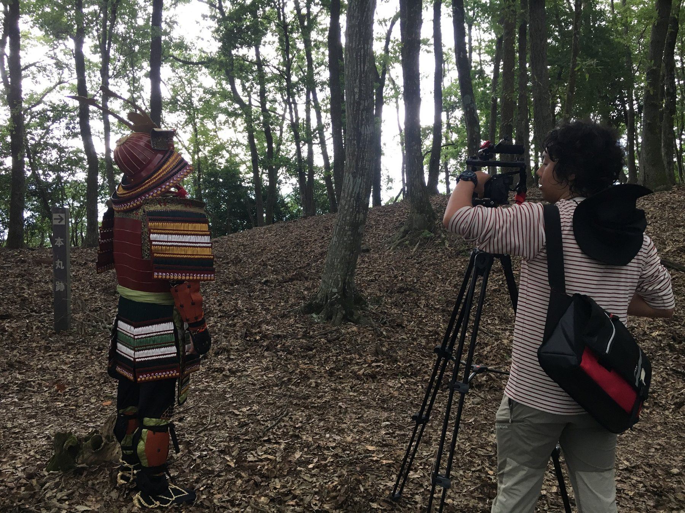
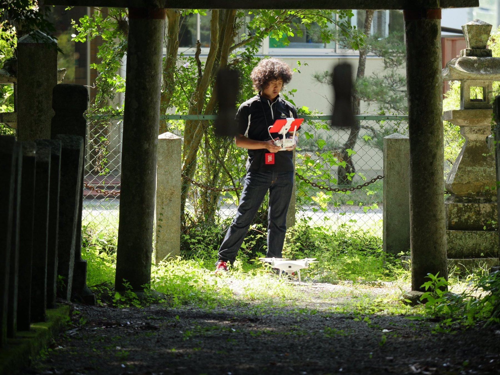
歴史資源・白旗城を題材としたプロモーション映像。
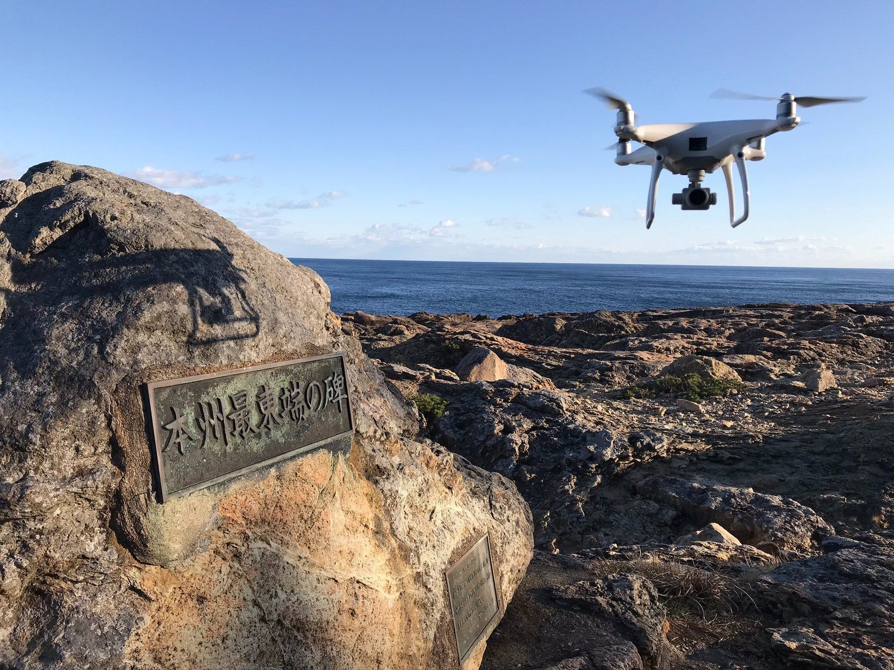
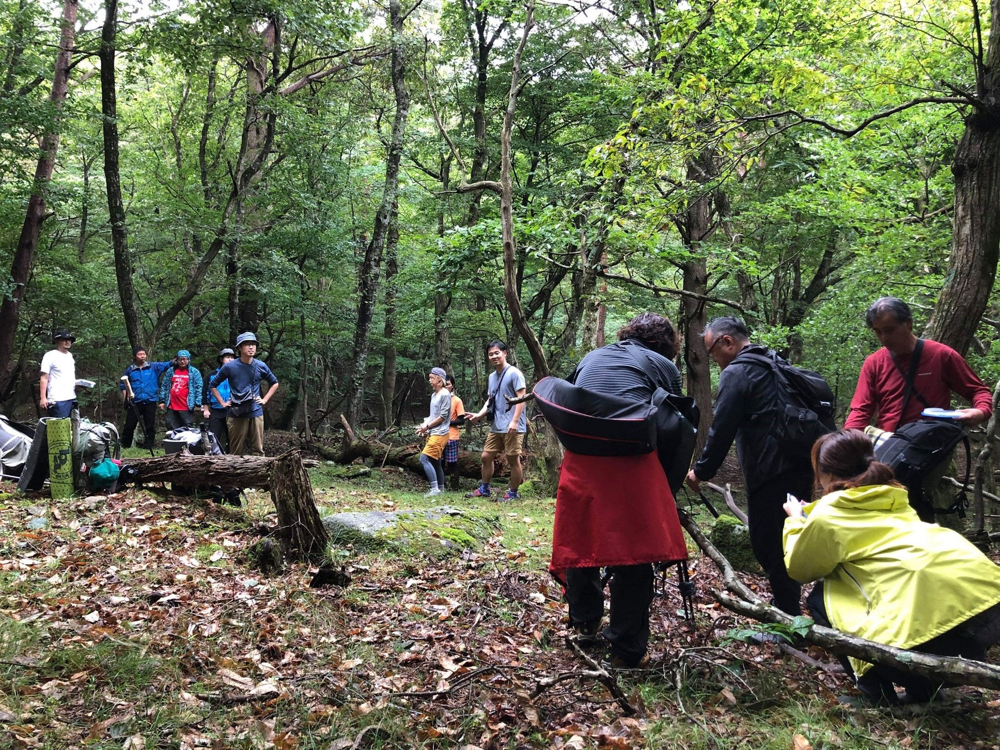
東北沿岸の自然・地域をドローンおよびVR映像で記録。
メイン写真は魹ヶ崎（本州最東端）。
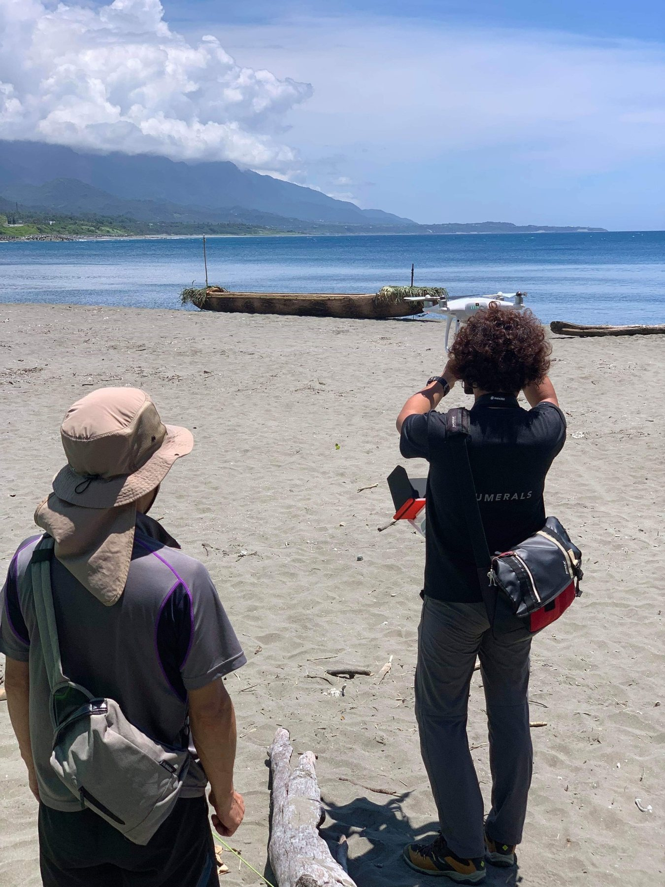
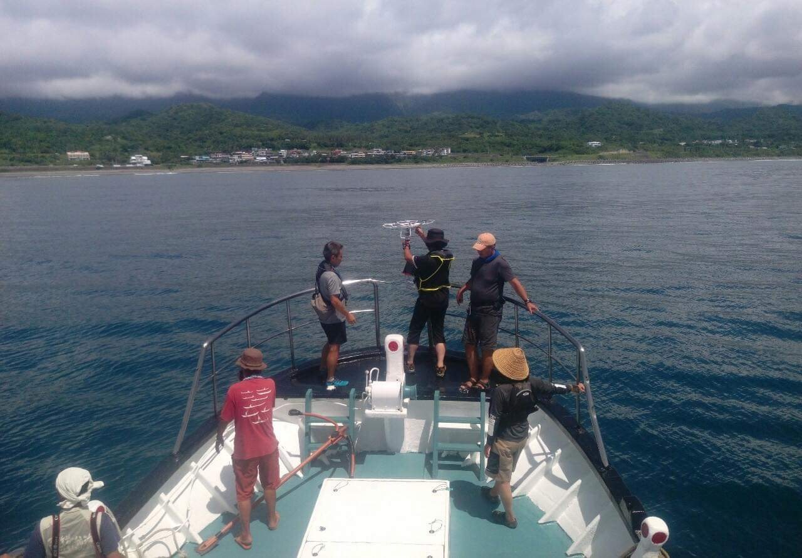
映画『スギメ』、国立科学博物館「シアター360」、NHK『三万年の記憶』に撮影参加。
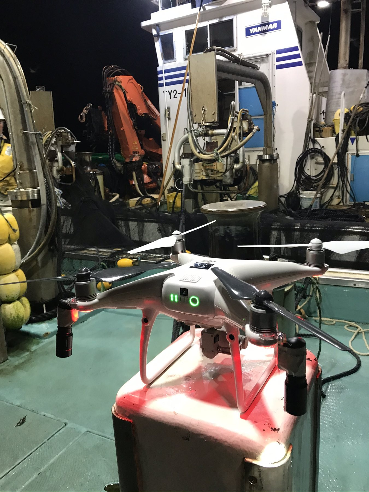
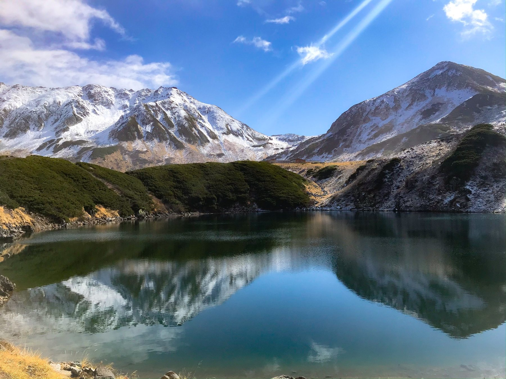
定置網漁、海、立山連峰など氷見の自然と暮らしを撮影。
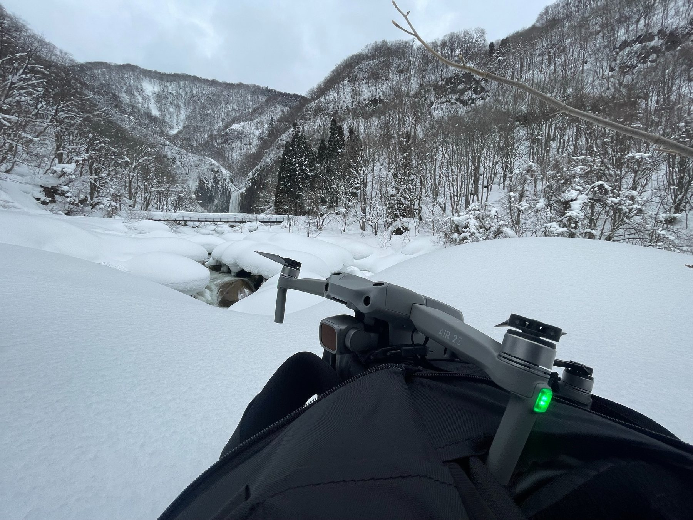
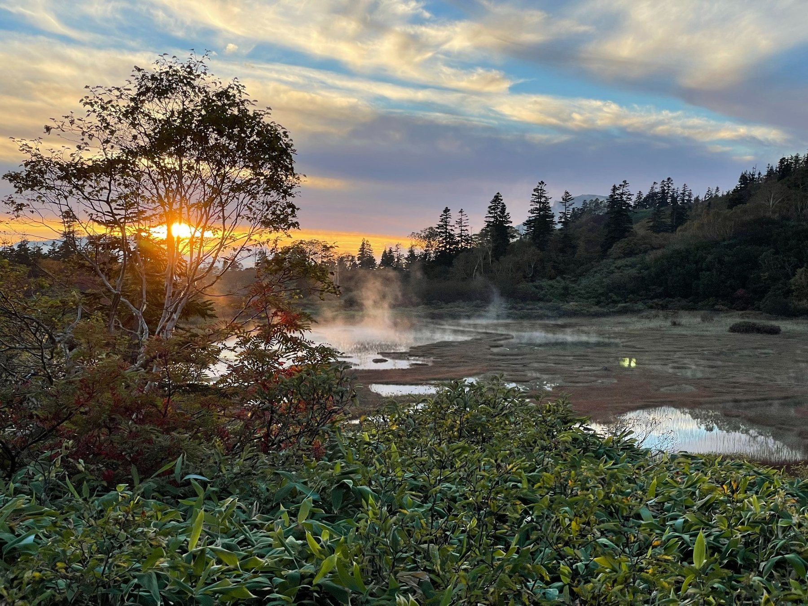
四季の自然環境を現地撮影。
積雪地や湖上を含むフィールドで収録。
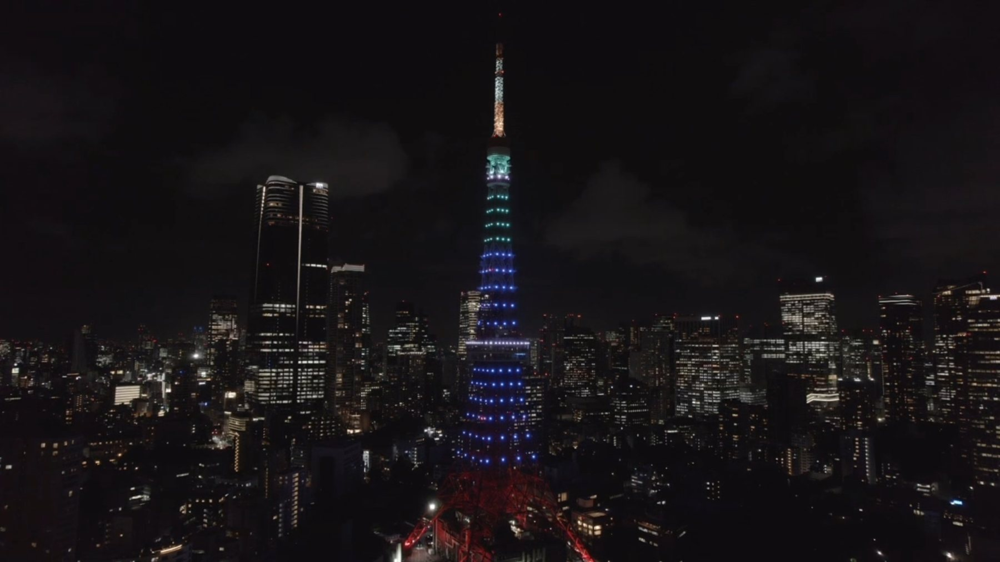
イベント撮影および東京タワー夜景のドローン撮影。
主な実績